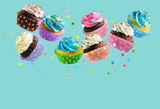

Loja de Cupcake

Bem-vindo ao nosso site de cupcakes! Aqui, você encontrará uma seleção deliciosa de cupcakes artesanais, feitos com ingredientes frescos e de alta qualidade para garantir um sabor e textura perfeitos em cada mordida.
Menu Especial
Baunilha - uma opção clássica, geralmente decorada com glacê de baunilha e enfeites comestíveis.
Chocolate - outra opção clássica, com cobertura de ganache ou glacê de chocolate e enfeites de chocolate.
Red velvet - um bolo avermelhado com sabor de chocolate e coberto com creme de queijo e enfeites de açúcar.
Clique aqui para ir para a segunda pagian do site --> Ir para a página 2"